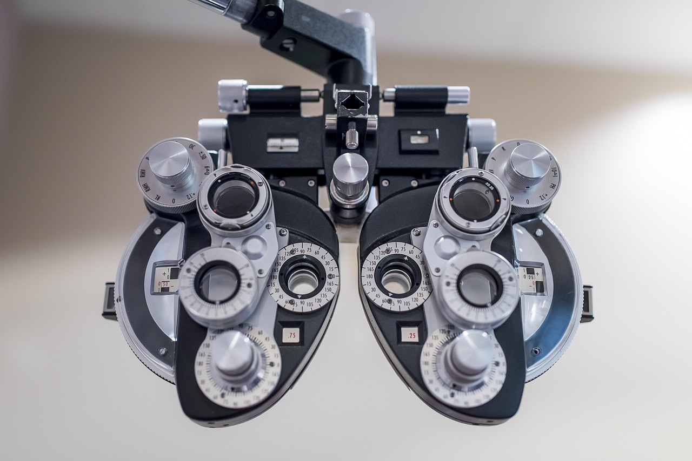
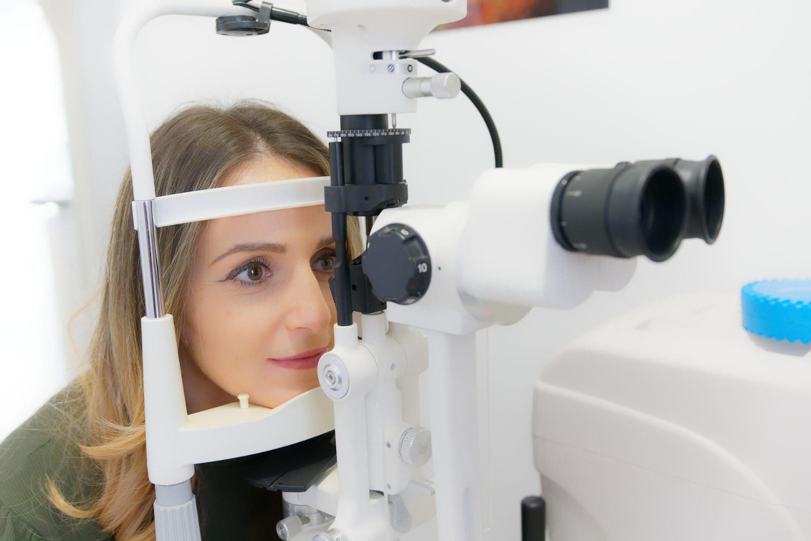
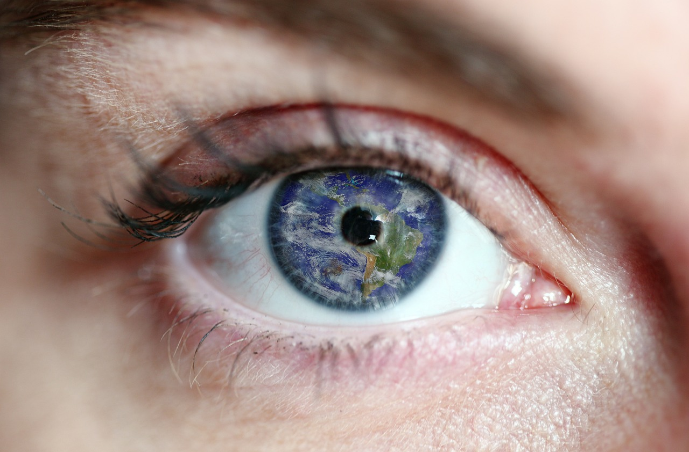
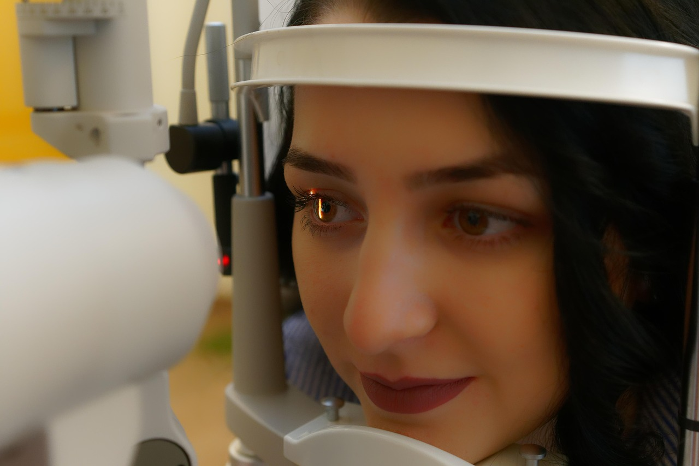
Excelência que
transforma sua visão
Dr. Alexandre C. Nascimento, unimos tecnologia de ponta, equipe especializada e atendimento humanizado para cuidar dos seus olhos com segurança e precisão.
Alexandre Nascimento
Cuidado, experiência e compromisso com a sua visão
Formado pela Faculdade de Medicina de Itajubá-MG e Residência Médica pela Santa Casa de Ribeirão Preto, tem mais de 20 anos de experiência na área.
Especialista em oftalmologia é membro da Academia Americana de Catarata e Cirurgia Refrativa (ASCRS), membro da Associação Brasileira de Catarata e Cirurgia Refrativa (BRASCRS), membro da Sociedade Brasileira de Glaucoma (SBG) e membro Titular do Conselho Brasileiro de Oftalmologia (CBO).
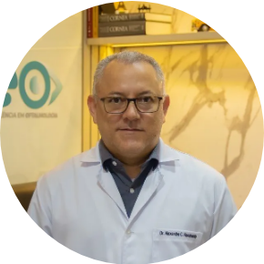
Dr. Alexandre C. Nascimento
Nossa clínica
Um espaço pensado para seu bem-estar e confiança
Contamos com uma estrutura moderna, tecnologia de ponta e um ambiente acolhedor para oferecer a melhor experiência em cuidado com a sua visão.
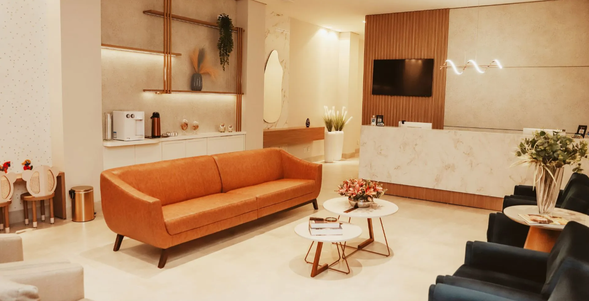
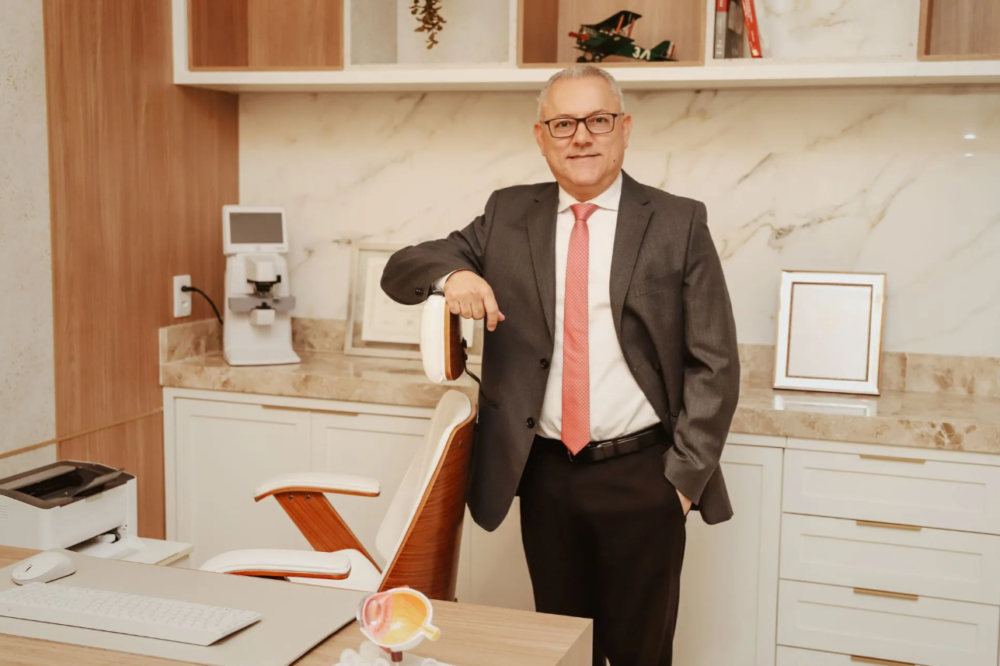
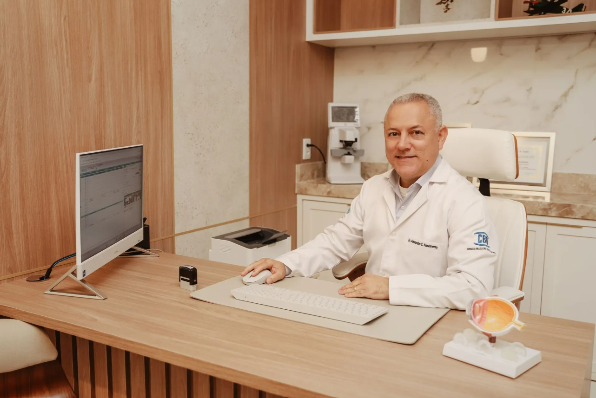
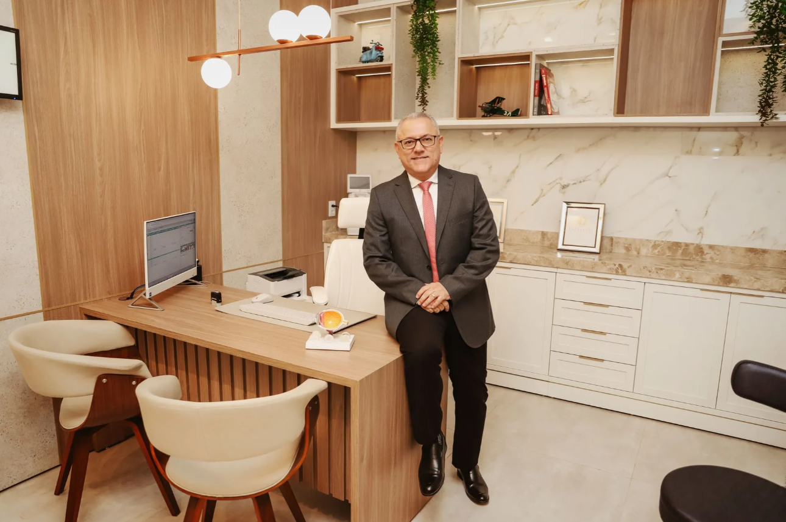
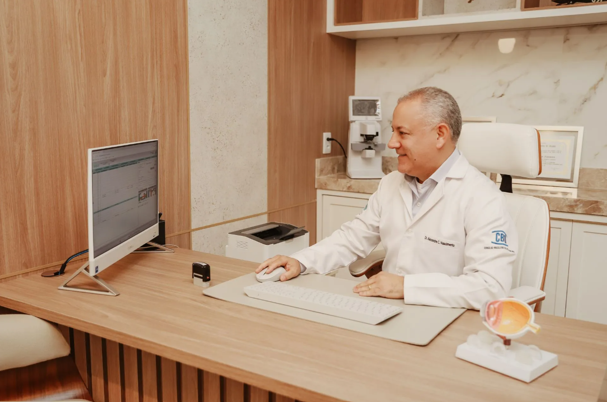
Exames
Diagnóstico completo
para cuidar de você
Cirurgias
Procedimentos avançados para restaurar
e preservar sua visão.
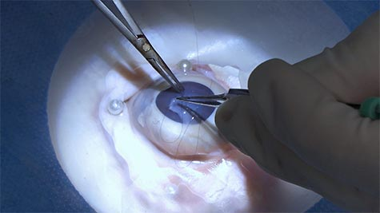
Catarata
Remoção do cristalino opacificado e implantação de lente intraocular para recuperar a visão.
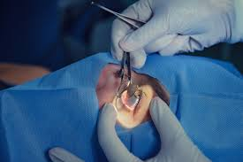
Pterígio
Remoção do tecido fibrovascular que cresce sobre a córnea, prevenindo complicações visuais.
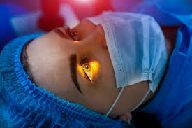
Refrativa
Avaliação da refracção visual e determinação do grau para óculos ou lentes.
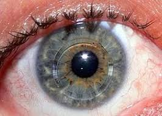
Ceratocone
Tratamento para correção da deformidade da córnea.
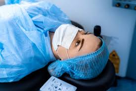
Conjuntivas
Tratamento para correção de condições patológicas das conjuntivas.
Convênios
Trabalhamos com diversos convênios para garantir o melhor atendimento.

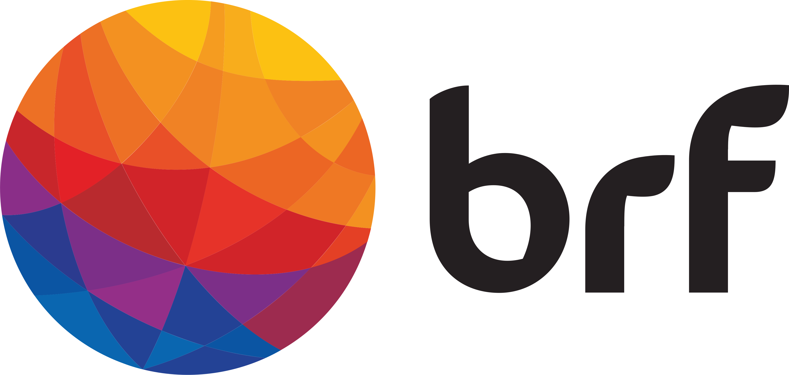